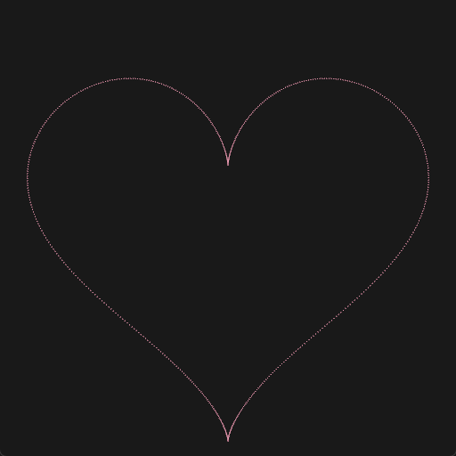
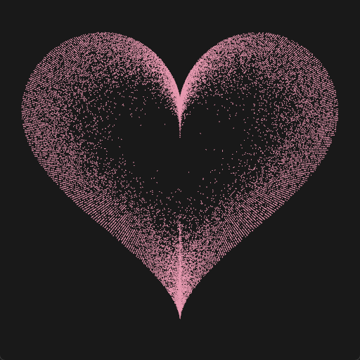
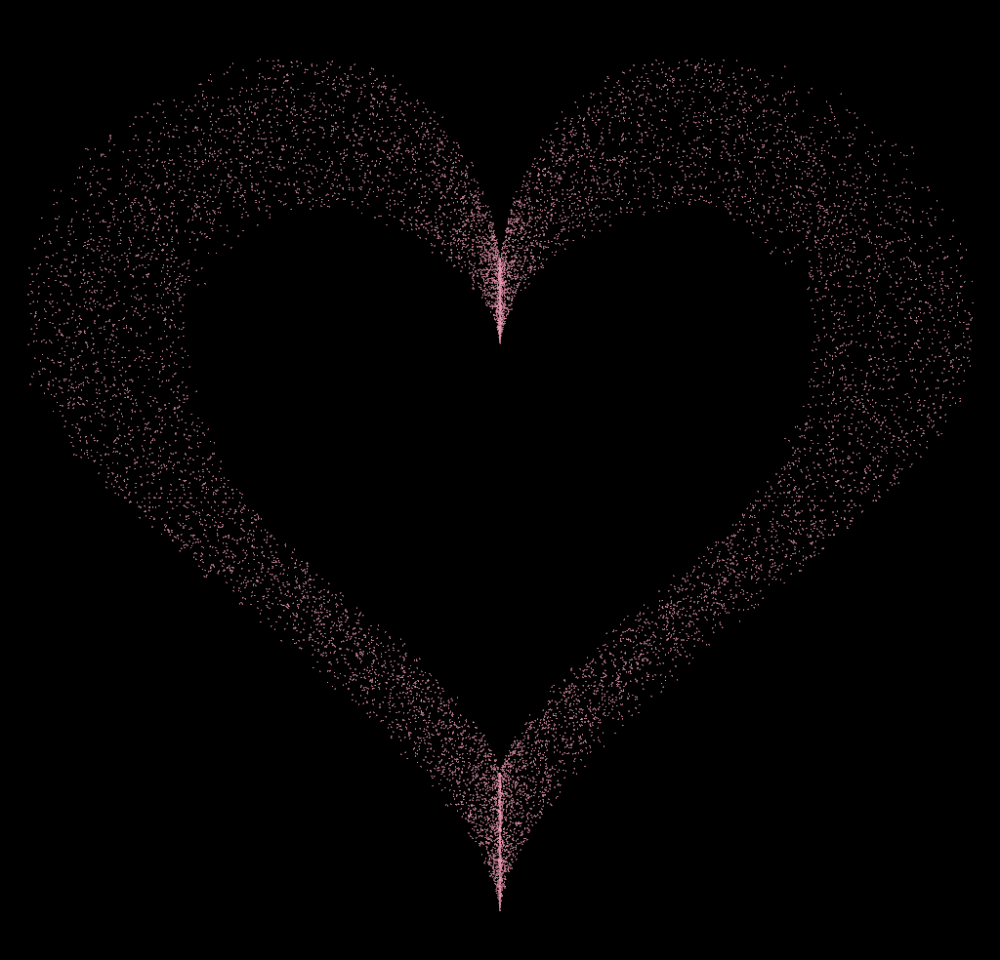
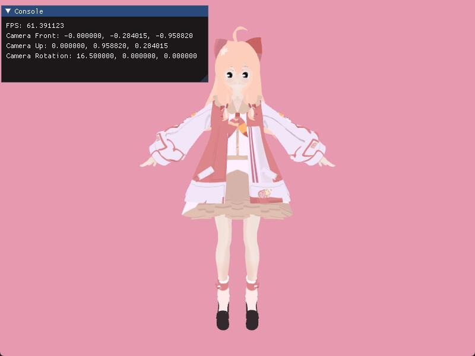

2022-11-22 尝试使用C++ OpenGL复刻电视剧中的爱心
声明：请注意，本文中含有GIF动图，使用移动数据阅读将会花费较多流量。
最近听说（其实火星了）电视剧《点燃我，温暖你》比较火，讲的是计算机系学生的故事，如果从专业角度来看，这部剧漏洞百出。
剧中男主李峋用C语言（某个镜头看得清清楚楚是 .py 文件）写了个爱心动画的效果，在网上讨论的热度比较高（可能也因为当时快到光棍节了，有些单身程序员按捺不住自己想要脱单的决心，决定复刻一个这玩意向心上人表达爱意）。

总之，有很多人用Python成功复现；也有人抄别人复现的代码，并推销所谓的Python课程。
https://www.bilibili.com/video/BV16g411B7Ff
https://www.bilibili.com/video/BV1TP411c7E7
但我看了一眼bilibili，不用Python实现的人寥寥无几。最近我正好在跟着LearnOpenGL学习，就想用OpenGL做一个试试，这样可以显得自己很牛逼（卷你妈呢）。虽然严格来说我并不能成为C语言系列大神[阴险]，但我还是希望自己没有用Python也能做到（其实是不熟悉Python画图相关的接口）。
成果展示
视频地址：bilibili

需求分析
经过对视频的观看与分析，我整理了需要实现的内容和技术需求。
- 爱心函数。
- 点的分布方式。仔细观察后发现这些随机分布的点，其实可以大致分为两种：
- 一部分爱心内的噪声点可以随心跳动伸缩，且方位大概确定，我的选择是这部分噪声点在C++层生成，随着线条离散点数据一起交给OpenGL，而非利用Shader生成。这种点我们叫他 固定噪声点 吧。
- 一部分噪声点是分布在爱心边缘内外两侧，每帧都会变化，这种点可以交给OpenGL，由Geometry Shader生成。这种点我们叫他 随机噪声点 吧。
- 让爱心跳动起来。两种噪声点也要进行分别处理：
- 固定噪声点 的缩放并非遵循简单的正弦函数。
- 靠近中心的点位移/缩放更大，靠边的点位移/缩放较小。
- 随机噪声点 的生成区间会随着心跳变化。
技术实现
我自己的另一套基于LearnOpenGL写代码有些重，不太方便修改。为了做这个爱心，我是直接拿LearnOpenGL几何着色器 章节的代码复制粘贴，然后链接自己之前编译整理好的第三方库，这样从下载代码到编译成功运行OK只花了十分钟。配置环境这种没有技术含量的部分就不再展开介绍了，跟着LearnOpenGL看个两三章就好。
然后简单修改一下 main.cpp 中的管线，让它按点渲染就好，也不需要传递点的颜色，可以先在Fragment Shader中简单设置一下。
爱心函数
剧中的写法
剧中女主采用了经典的爱心极坐标函数来实现，这种写法比我最一开始使用的要简单许多，也不需要做什么详细介绍，直接拿来抄就已经能有很好的效果了：
x = 16 * sin(t) * sin(t) * sin(t)
y = 13 * cos(t) - 5 * cos(2 * t) - 2 * cos(3 * t) - cos(4 * t);

一开始的写法（被废弃）
一开始爱心函数参考了这篇文章，该文章将爱心拆成上下两部分：上半部分是两条半圆曲线，下半部分是两条 arccos 曲线。
我又加了一些可以自定义的形状参数，r 指半圆半径，h 指 arccos 曲线从最高到最低的高度差。即 h = 某个值 * (arccos(-1) - arccos(1))。
float heart_top(float r, float x)
{
return sqrtf(r * r - (abs(x) - r) * (abs(x) - r));
}
float heart_bottom(float r, float h, float x)
{
return (acosf(1 - 1.0f / r * abs(x)) - PI) * (h / PI);
}
定义一个线段的struct，并实现一个可以离散化线段的函数。
struct Line2D
{
float x_left = -1.0f;
float x_right = 1.0f;
function<float(float)> line_function; // y = ... x ...
vector<vec2> to_points(float interval = 0.005f)
{
vector<vec2> point_list = vector<vec2>();
for (float temp_x = x_left; temp_x < x_right; temp_x += interval)
{
float temp_y = line_function(temp_x);
point_list.push_back(vec2(temp_x, temp_y));
}
point_list.push_back(vec2(x_right, line_function(x_right)));
return point_list;
}
};
然后用一个函数对这俩曲线的生成过程进行组装和配置。这里添加了偏移量，是因为所有曲线都是以窗口中心为原点，爱心在原点生成的话会太过靠下，所以在输出点数据之前加上一点偏移，让爱心往上走走，就可以把爱心调整到一个还不错的位置。
vector<vec2> heart_points(float r, float h, float offset_x, float offset_y, float interval = 0.005f)
{
Line2D line_top = Line2D();
line_top.x_left = -2.0f * r;
line_top.x_right = 2.0f * r;
line_top.line_function = std::bind(heart_top, r, std::placeholders::_1);
vector<vec2> line_top_point_list = line_top.to_points();
Line2D line_bottom = Line2D();
line_bottom.x_left = -2.0f * r;
line_bottom.x_right = 2.0f * r;
line_bottom.line_function = std::bind(heart_bottom, r, h, std::placeholders::_1);
vector<vec2> line_bottom_point_list = line_bottom.to_points();
vector<vec2> point_list;
point_list.insert(point_list.end(), line_top_point_list.begin(), line_top_point_list.end());
point_list.insert(point_list.end(), line_bottom_point_list.begin(), line_bottom_point_list.end());
for (vec2& point : point_list)
{
point.x += offset_x;
point.y += offset_y;
}
return point_list;
}
这种写法被淘汰的主要原因是离散点的分布不均匀。因为是基于X轴的离散，在曲线一阶导较大的部分，可以明显看到点很稀疏。如果希望均匀就要去做额外处理，比如根据曲线导数来决定下一个点和前一个点的X轴间隔是多少。
但在我准备动手实现上述的采样改进方案时，发现了上文提到的更好用的，基于极坐标的爱心函数，于是直接放弃这种麻烦的写法了。
随机分布的噪声点
因为实现方式不同，需要传递给OpenGL的数据也不同，所以我将分两次分别绘制 固定噪声点 和 随机噪声点。
固定噪声点
固定噪声点主要分布在爱心轮廓内一定距离内，那么我需要生成值域为 [0, 1]，且大部分值在 1 附近的随机数，作为点坐标的缩放比例。
我第一时间想到的是使用正态分布：μ 可以直接确定为 1，σ 则需要经过多次调试，以确定一个比较满意的值。
根据一开始的分析，这些噪声点的位置在运动的情况下也相对固定，所以可以作为固定的顶点数据传递给OpenGL。
使用C++生成固定噪声点的话，std库内也很幸运地有现成的正态分布函数可以调用。
在上文生成轮廓离散点的过程内，添加修改成如下操作：每次计算出轮廓点的坐标，就根据该点的坐标生成 NORMAL_DIST_POINT_PER_SLICE 个固定噪声点，并填入顶点数据中：
for (unsigned int i = 0; i < NORMAL_DIST_POINT_PER_SLICE; ++i)
{
point_list.push_back(vec2(x * normal_dist(), y * normal_dist()));
}
上图中，左侧 σ = 0.1，右侧 σ = 1.0 已经根本看不出心形了。σ 太大的话不但会模糊爱心上方的两瓣，更会让大量的随机点重复分布在坐标轴附近（因为有相当一部分的值在0附近）形成一个十字。经过多次测试后，发现 σ < 0.2 时能保持不错的心形形状，且噪声点不会在不希望的地方聚集。
上面的代码中，x 和 y 两处的正态分布随机值是不相同的。如果使用相同的值，就会变成下图的效果，可以看到不够随机，噪声点分布为很明显的线条，但看起来还是挺有趣的。下图中 σ = 0.2。

随机噪声点
有关随机噪声点，我的实现思路是：向OpenGL传递爱心轮廓的顶点数据，然后在Geometry Shader中，每次对一个点的坐标进行随机缩放，并生成多个噪声点，范围就在轮廓内外两带的一个范围中。
有关随机缩放值的生成，使用了比较常见的伪随机数的生成函数，这个函数的值域为 [0, 1]：
fract(sin(dot(co.xy, vec2(12.9898, 78.233))) * 43758.5453)
但因为这只是个生成伪随机数的函数，而我们需要每次执行Geometry Shader时，根据一个点的坐标生成若干个随机的点的坐标，所以就需要每次向伪随机函数传递不同的值。我的做法是 点的坐标 +/- 当前生成的是随机噪声点记数，可以保证在一次执行中，传递给伪随机的值每次都不相同：
for (float i = 0.0; i < random_dist_point_per_slice; i += 1.0)
{
float r_x = random(vec2(gl_in[0].gl_Position.x + i, gl_in[0].gl_Position.y + i));
float r_y = random(vec2(gl_in[0].gl_Position.x - i, gl_in[0].gl_Position.y - i));
// float mult_x = ...
// float mult_y = ...
gl_Position = vec4(gl_in[0].gl_Position.x * mult_x, gl_in[0].gl_Position.y * mult_y, 0.0, 1.0);
EmitVertex();
}
下图的结果来看，确实足够随机且均匀。

但实际上看原作，它并非如此“整齐”地分布在两侧，还是有随缩放影响排布范围和密度的影响因素在内，这里没有深入处理。
わくわく
心跳频率
简单心跳效果的实现，可以向Vertex Shader传递程序运行的时间，将时间带入到一个正弦函数中，作为点坐标的缩放乘数。
但观察原版视频可以发现它的缩放并非为一个简单的正弦函数。对此我的设想的处理方式就是多个函数叠起来，但之后没有花时间研究这里。
心跳幅度
观察原版视频可以发现中一些固定的点可以看出，越靠近窗口中心的点位移越大，远离窗口的点位移较小，这样能呈现了一定的立体感。
可以根据每个点到坐标原点（即窗口中心）的距离，对跳动幅度 BEAT_AMPLITUDE 进行一定的衰减处理。
我一开始的想法是，所有的点到原点的距离，都不会超过 sqrt(2)，那么就根据这个值做幅度衰减就好：
BEAT_AMPLITUDE *= 1.0 - length(in_pos) / sqrt(2.0);
随机噪声点的幅度变化
可以看到，随着心跳的变化，随机噪声点的范围基本没有什么变化，最简单的处理方法就是，在Geometry 接受来自Vertex Shader的心跳乘数，然后乘以它的倒数即可。
至于原作中有些波动的感觉，就没有再去研究如何实现了。
额外处理
帧数限制
原图大概帧数在20左右，如果帧数较高（比如我的显示器是60FPS），随机噪声点的变化就会过快，从而影响观感。所以需要进行简单的限制，用 std::this_thread::sleep_for() 函数就可以满足需求。
修改顶点的尺寸
同样是因为随机噪声点，如果顶点尺寸小（1~4个像素点），那么就要增加顶点密度，随机噪声点过多也会影响观感。
最简单的修改顶点尺寸的方法是：在Vertex Shader和Geometry Shader中修改值 gl_PointSize。此修改需要在 C++ 层添加额外设置 glEnable(GL_PROGRAM_POINT_SIZE)。
结语
自我评价
-
说起来这还是我第一次用Geometry Shader，感觉有很多地方都可以再学习和改进。
-
有很多问题没有去处理，使最后的成品并不能还原电视剧里的效果：
- 极坐标的爱心还是存在采样点不均匀的问题，在靠近垂直中线的部分点分布过于密集。
- 没有更好的模拟心跳的效果。
- 随机噪声点的波动感觉没有实现。
我还在做什么
- 《圣嘉然的复活》

感谢阅读。